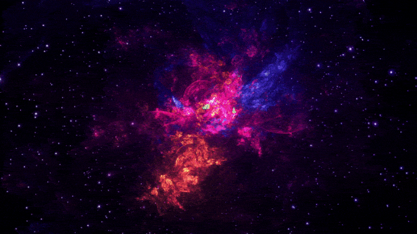
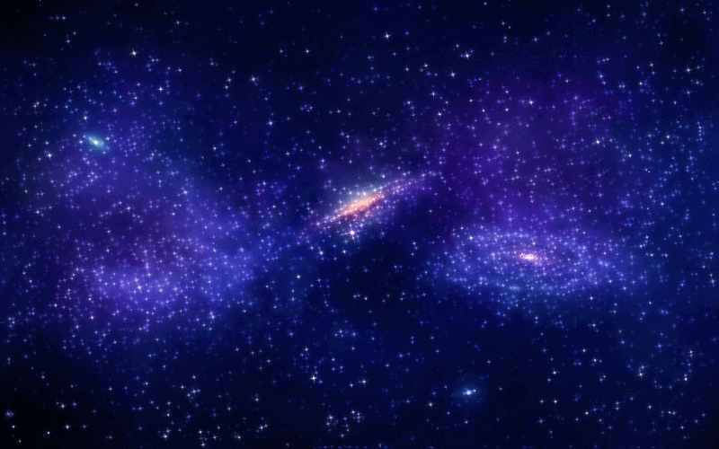
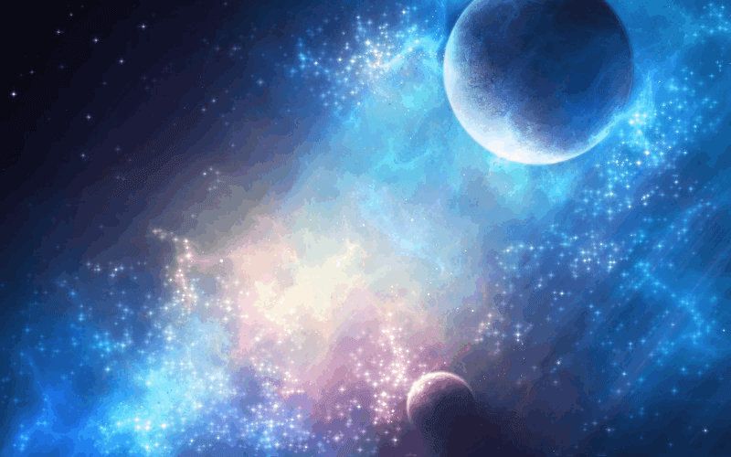

Планета – это объект, который вращается вокруг Солнца, обладает достаточной массой, чтобы быть круглым или почти круглым, не является спутником какого-либо другого объекта и расчистил свою орбиту от себе подобных космических тел.
Ближе всех к Солнцу находится планета Меркурий. Меркурий - быстроногий бог - посланец богов, обладатель крылатых сандалий. И планета Меркурий быстрее других бежит по своему пути вокруг Солнца. Кстати, именно близость к Солнцу создает трудности наблюдений этой планеты с Земли - Меркурий все время находится на небе недалеко от Солнца и тонет в его ярких лучах. Говорят, что великий Коперник за всю свою жизнь так ни разу и не увидел Меркурий.
Следующая планета носит имя богини любви и красоты Венеры. Это действительно одно из самых красивых и ярких светил нашего неба. Ярче Венеры только Солнце и Луна. Венера известна как «утренняя и вечерняя звезда» - именно в это время ее можно видеть на небе.
На третьей от Солнца планете мы с вами живем - это планета Земля. Богиня земли Гея - мать всего живого, и уникальная особенность Земли заключается в том, что на ней возникли условия, благоприятные для зарождения и сохранения жизни.
Сосед Земли Марс получил имя грозного бога войны. Марс имеет красноватый оттенок, напоминающий о пожарах и крови.
Следующая планета, Юпитер, самая крупная и одна из самых ярких. Юпитер - верховный бог, отец богов и людей.
Планета Сатурн имеет мертвенно-бледный, свинцовый оттенок цвета. С богом Сатурном римляне связывали представления о судьбе и роке. Кроме того, греческий аналог этого бога носил имя Крон (Хронос) - время...
Шестую планету - Уран - открыл знаменитый астроном Уильям Гершель. Светило медленно перемещалось среди звезд, чем и выдало свою планетную природу. Уран - бог неба.
Планета Нептун носит имя бога морей. Ее открытие интересно тем, что сначала ее положение вычислили по влиянию на планету - соседа, а потом уж нашли на небе в предсказанном месте.
Радиус 2440 км
Радиус 6052 км
Радиус 6378 км
Радиус 3396 км
Радиус 69911 км
Радиус 58232 км
Радиус 25360 км
Радиус 24622 км
Самый крупный бассейн Солнечной системы, образовавшийся в результате столкновения с космическим объектом, находится на Меркурии. Это «Калорис» (Caloris Basin), диаметр которого составляет 1,550 км. Столкновение было настолько сильным, что ударная волна прошла по всей планете, кардинально изменив ее внешний облик.
1 плутонианский год длится 248 земных лет. Это означает, что в то время как Плутон делает всего один полный оборот вокруг Солнца, Земля успевает сделать 248.
Марсианский вулкан «Олимп» (Olympus Mons) является крупнейшим в Солнечной системе. Его протяженность более 600 км, а высота 27 км, в то время как высота самой высокой точки на нашей планете, пика горы Эверест, достигает всего 8,5 км.
Взрыв сверхновой звезды сопровождается выделением гигантского количества энергии. В первые 10 секунд взорвавшаяся сверхновая производит больше энергии, чем Солнце за 10 миллиардов лет, и за короткий период времени вырабатывает больше энергии, чем все объекты в галактике вместе взятые.Яркость таких звезд с легкостью затмевает светимость галактик, в которых они вспыхнули.
Самым крупным упавшим на Землю метеоритом считается 2,7 метровый «Гоба» (Hoba), обнаруженный в Намибии. Метеорит весит 60 тонн и на 86% состоит из железа, что делает его самым крупным куском железа природного происхождения на Земле.